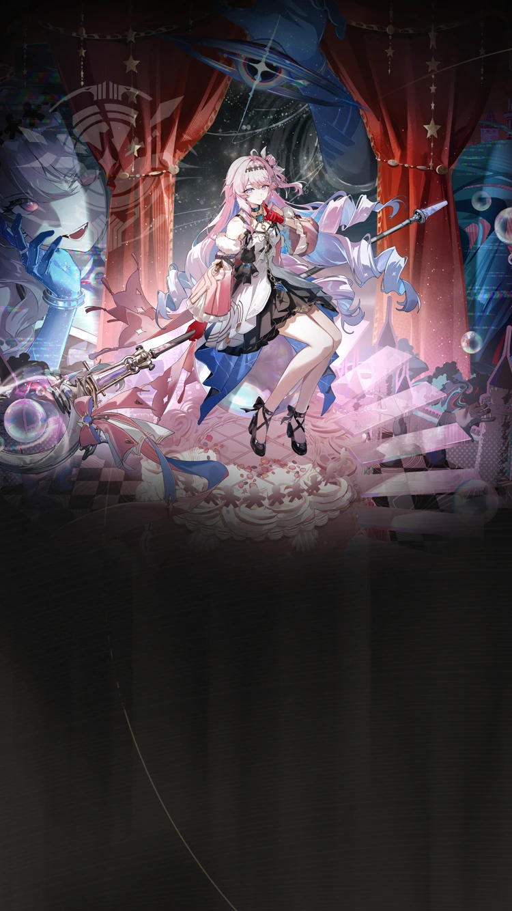
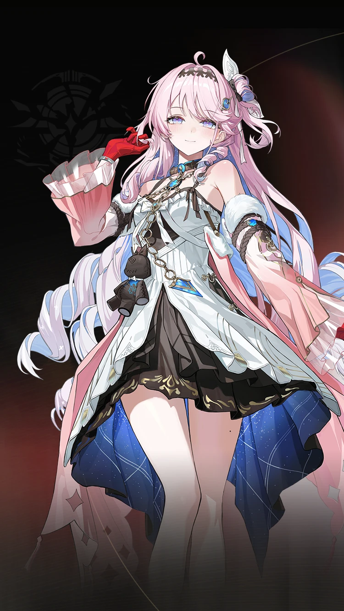
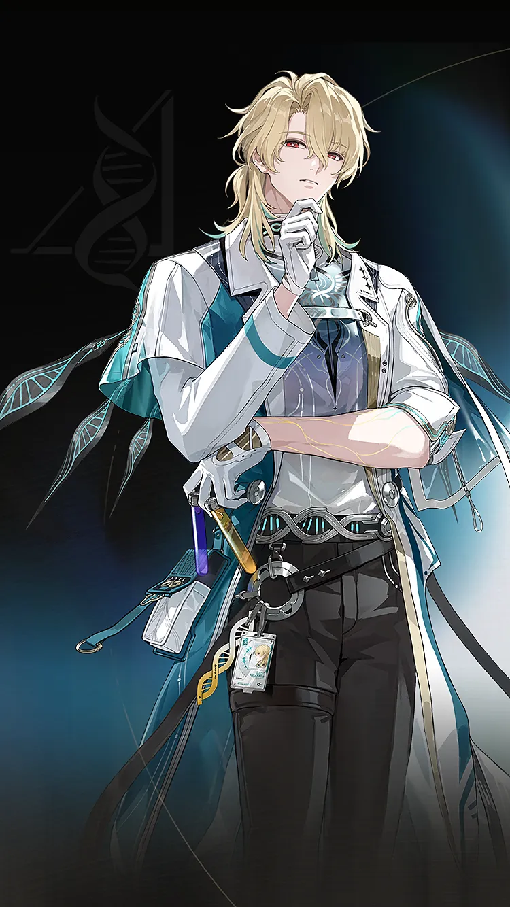

Wuthering Waves Resonator guide
Denia build, teams, weapons, and Echoes
Fusion Burst sub-DPS.
Personal notes
Optional profile-aware info that keeps the main guide unchanged.
No profile connected on this browser yet.
Log in above to load an existing WaveKit profile, or use the team helper to mark your Resonators and weapons for Denia.
Skill priority
Team compositions
 Main damageAemeathLeads the damage plan
Main damageAemeathLeads the damage plan
Setup helperDeniaEnables the team route Support slotChisaCompletes this composition
Support slotChisaCompletes this compositionAemeath's modes are kept separate: Denia with Chisa or Lupa for Fusion Burst, Lynae with Mornye for Tune Rupture, and Lupa with Mornye or another Fusion partner for Mono Fusion.
Main damageAemeathLeads the damage planSetup helperDeniaEnables the team route Support slotLupaCompletes this composition
Support slotLupaCompletes this compositionAemeath's modes are kept separate: Denia with Chisa or Lupa for Fusion Burst, Lynae with Mornye for Tune Rupture, and Lupa with Mornye or another Fusion partner for Mono Fusion.

Main damageLuuk HerssenLeads the damage planSetup helperDeniaEnables the team route Support slotMornyeCompletes this composition
Support slotMornyeCompletes this compositionLuuk Herssen wants a Tune Strain shell first. Denia is treated as his strongest current helper, Lynae is a strong alternate, and Sanhua remains the accessible fallback.
New player reading guide
If you are only checking Denia before building a profile, start by confirming their role, weapon type, Sonata, and whether they need a real healer or a specific helper.
Denia guide overview
Denia is a Fusion Sub DPS in Wuthering Waves. Its recommended build starts with Forged Dwarf Star, while its Echo plan uses Chromatic Foam. The guide also covers stat priorities, compatible teammates, and a practical rotation.
Quick build
- Role
- Sub DPS
- Team type
- Burst
- Best weapon
- Forged Dwarf Star
- Alternate weapons
- Stringmaster / Lethean Elegy / Cosmic Ripples
- Sonata
- Chromatic Foam
- Echo cost
- 4-3-3-1-1
- Main Echo
- Reminiscence: Denia
- Main stats
- Crit Rate or Crit DMG / Fusion DMG / ATK%
Stat priority
- Priority 1: Energy Regen for a consistent burst rotation
- Priority 2: CRIT Rate and CRIT DMG
- Priority 3: Resonance Liberation DMG Bonus
- Priority 4: ATK%
Resonance Chain overview
Each Resonance Chain level comes from duplicate copies of this Resonator. Expand a level for the exact in-game effect and use the short line for a quick read.
Playstyles and modes
Resonance Mode - Fusion Burst
When in Resonance Mode - Fusion Burst, this Resonator inflicts Fusion Burst Effect and boosts the damage output of Fusion Burst Effect teams.
Resonance Mode - Tune Strain
When in Resonance Mode - Tune Strain, Denia can inflict Tune Strain - Shifting, reset Tune Strain - Interfered duration, rapidly increase the target's Off-Tune Level, and overall boost the damage dealt by the Tune Strain Response team.
Chain effects
R1Silent Glows in a Dimlit DreamCrit.…+
Crit. DMG is increased by 30%.
When performing Resonance Skill Phantom Bubble - Stagecraft Form, or Resonance Skill Banish - Breakdown Form, Basic Attack - Breakdown Form Stage 3, Basic Attack - Breakdown Form Stage 4, Mid-air Attack - Breakdown Form Stage 3, and Mid-air Attack - Breakdown Form Stage 4, Denia becomes immune to interruption.
When Denia enters combat in Stagecraft Form, she obtains the Entropy Shift: Stagecraft Form effect for 30s.
When Denia enters combat in Breakdown Form, she obtains the Entropy Shift: Breakdown Form effect for 12s.
R2Tossed in the Tides of RealityWhen Denia is in Resonance Mode - Fusion Burst, after a Resonator in the team inflicts Fusion Burst on the target, they gain 50% Fusion DMG Bonus for 15s.…+
When Denia is in Resonance Mode - Fusion Burst, after a Resonator in the team inflicts Fusion Burst on the target, they gain 50% Fusion DMG Bonus for 15s. After Fusion Burst is triggered on enemies near the active Resonator in the team, Denia gains 1 stacks of Degenerate Voidmatter for 15s, up to 10 stacks. Each stack of Degenerate Voidmatter causes Denia to ignore 1% of the target's Fusion RES.
This effect ends when Denia switches modes.
When Denia is in Resonance Mode - Tune Strain, her Forte Circuit effect is enhanced: After a Resonator in the team inflicts Tune Strain - Shifting on the target, their Tune Break Boost is increased by 20 for 15s, and the target's Off-Tune Level is increased by 100% of the max. This effect can only be triggered once per 300s on the same target.
This effect ends when Denia switches forms.
The DMG Multiplier of Resonance Skill Banish - Breakdown Form is increased by 40%.
R3Through Dark and Wind, the Erlking FollowsThe DMG Multiplier of Resonance Liberation Final Act - Breakdown Form is increased by 80%.…+
The DMG Multiplier of Resonance Liberation Final Act - Breakdown Form is increased by 80%.
Denia now holds up to 5 Dark Cores. While in Entropy Shift, the shortest interval at which she can obtain Dark Core is reduced to 6s.
The Entropy Shift: Stagecraft Form effect is enhanced and now grants 4 points of Void Particle per second.
The Entropy Shift: Breakdown Form effect is enhanced: Casting Resonance Liberation Final Act - Breakdown Form additionally restores 30 points of Concerto Energy.
Denia's Inherent Skill Vestiges of Falsehood is enhanced:
Upon entering combat, Dark Core and Void Particle are restored to the max. This effect can be triggered once every 12s.
When the number of Dark Cores reaches the limit, casting Basic Attack - Stagecraft Form Stage 4 or Resonance Skill Phantom Bubble - Stagecraft Form consumes all Dark Cores and increases the DMG Multiplier of this skill by 1200%. The DMG dealt is considered Resonance Liberation DMG.
R4From the Far Beyond, to the Far BeyondThe attack interval of Erosion Field is reduced to 3s.+
The attack interval of Erosion Field is reduced to 3s.
R5If Lies Patch Up a HeartThe DMG of Resonance Liberation Final Act - Stagecraft Form is increased by 100%.+
The DMG of Resonance Liberation Final Act - Stagecraft Form is increased by 100%.
R6May You Find Your Sun in the SilenceWhile in Entropy Shift states, gain 60% ATK increase and 60% Fusion DMG Bonus.…+
While in Entropy Shift states, gain 60% ATK increase and 60% Fusion DMG Bonus.
While Denia is in Resonance Mode - Fusion Burst, after Erosion Field deals damage, trigger Fusion Burst on the target based on its max limit. The Fusion Burst DMG triggered gains a 200% DMG Multiplier increase against the main target and does not remove the Fusion Burst stacks on the targets hit. The effect can be triggered on the same target up to 1 time. When the target is damaged by Resonance Liberation Final Act: Breakdown Form, the effect's trigger count is reset. The trigger count can be reset for the same target once every 2s.
While Denia is in Resonance Mode - Tune Strain, when Resonators in the team deal Tune Break DMG to Mistuned enemies in Tune Strain - Shifting, they additionally inflict 1 stack of Tune Strain - Interfered on the target. This effect can only be triggered on the same target once every 3s.
Effect names, numbers, and conditions follow current public game-data records. WaveKit keeps the full wording available so important conditions are not lost in a tier label.
Team direction
Denia is best handled by matching their role with the teammates you actually own.
WaveKit treats Denia as flexible. Use the team helper to match them with your owned roster instead of forcing one fixed team.
Useful teammates
No fixed teammate pool is required. Prioritise role coverage, safe sustain, and matching build needs.
Simple play pattern
- Use Denia as a setup piece: apply their buff, effect, or off-field pressure first.
- Swap back to the carry once their useful window is active.
- If their setup feels late, add Energy Regen before chasing more damage.
Build priority
- Difficulty
- Flexible
- Safety
- Bring a healer if learning
- Data note
- Guide checked
Denia is most valuable when their buff, element, or mechanic matches the carry you want to build.
Denia FAQ
What is the best Denia build in Wuthering Waves?
Denia's recommended WaveKit setup is Fusion Burst Sub-DPS Build, using Forged Dwarf Star, Chromatic Foam, and Reminiscence: Denia as the main Echo target.
What stats should Denia use?
Start with Crit Rate or Crit DMG / Fusion DMG / ATK%. If the rotation feels uncomfortable, improve Energy Regen or defensive comfort before chasing perfect substats.
What teams work with Denia?
Denia is flexible, so the best team depends on the Resonators and weapons you own.
Is Denia beginner friendly?
Denia's current difficulty is listed as Flexible. If you are learning, pair them with safer sustain or defensive support.